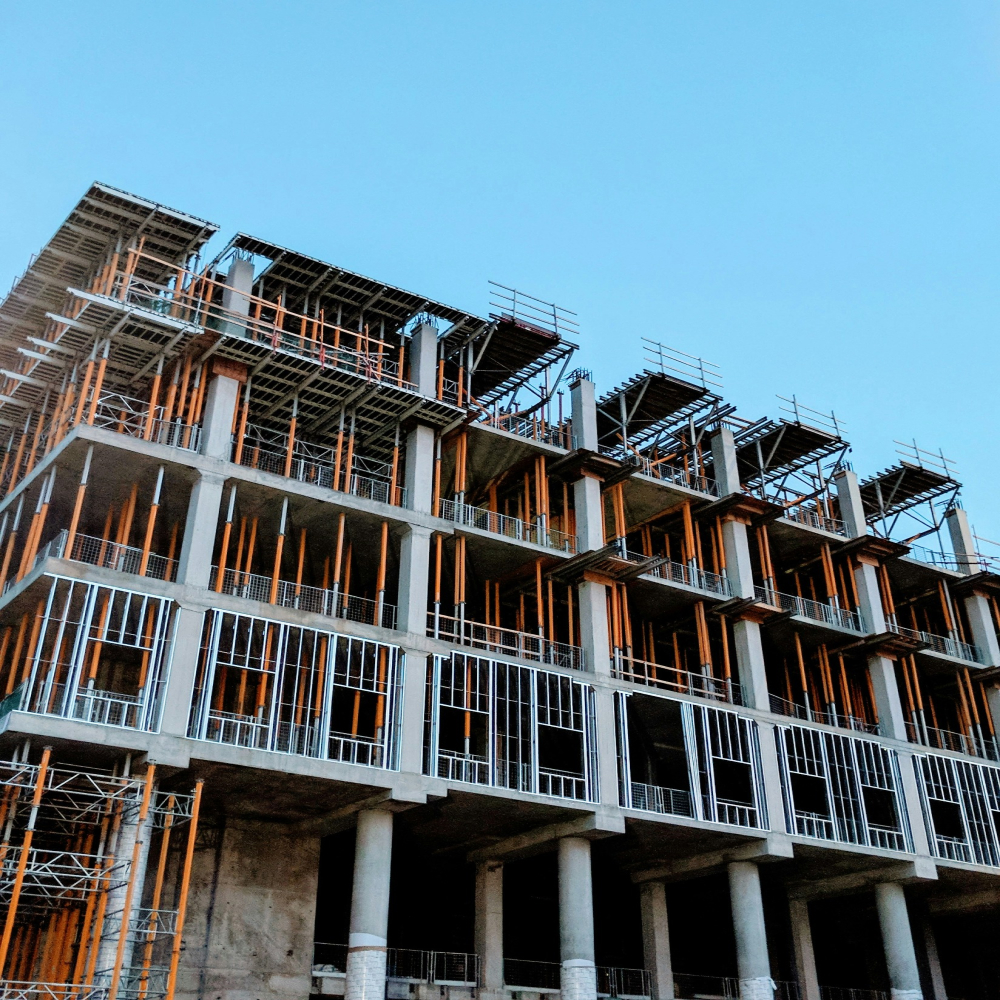

Home > 기술혁신 >
토목건축연구소
토목건축연구소
Think of the people and nature
Construct R&D
기술혼을 담아
기술 선진국의 꿈을
실현합니다.
금호건설의 토목건축연구소는 인명과 구조물 보호, 공기 단축을 위한 시공법 개발과 친환경 건설 사업 기술을 개발하고 있습니다.
이를 위하여 면진시스템, PC공법, 초고층 아파트 시스템 개발, 대공간 구조물, 자가치유형 및 폐타이어 이용 방수 공법, 에너지절약형 다기능성 외피 시스템 등에 주력하고 있습니다.
History
-
- 2019
- 02건설신기술 제860호 취득
- 01제 9대 이관상 연구소장 취임
-
- 2015
- 09건설신기술 제776호 취득
-
- 2002
- 11건설신기술 제349호 취득
-
- 2000
- 04건설신기술 제229호 취득
-
- 1998
- 07건설신기술 제111호 취득
-
- 1997
-
05건설협회 창립 50주년기념 산업포장
건설협회 창립 50주년기념 건설산업부장관상 수상
-
- 1996
- 11용인실험실 개실
- 02안전진단 전문기관 지정 (건축분야)
-
- 1994
-
03한국산업기술진흥협회로부터 기업부설연구소 인정획득
대한주택공사 협력연구기관으로 위촉 - 02제12회 대한건설협회 건설기술상 수상
-
- 1990
- 01과학기술처로부터 기업부설연구소 인정 획득
-
- 1989
- 12건설사업부 기술연구소로 확대 개편
-
- 1986
- 09건설사업부 기술연구실 신설
연구분야
-
research field
- 분절형 PC아치교 급속시공 기술
- 본 프리캐스트 콘크리트 아치 시스템은 중·소규모 교량을
공장 및 현장에서 사전 제작하여 급속시공 함으로써 현장 타설의 단점을 보완하는 공법입니다.
이 공법은 자전거 및 보도교량, 수해복구와 같이 신속시공이 필요한 시설 등에 적용 가능합니다.
-
research field
- 변단면 슬립폼 급속시공 기술
- 본 공법은 7년 여 간 한국건설기술연구원 등 과의 국가연구과제를 수행하여 국산화에 성공한 기술로,
콘크리트 타워, 주탑, 교각 구조물의 단면이 변화되는 구간의 슬립폼 시공시 필요한 급속시공 기술입니다.
 -
research field
- 교량면진 시스템
- PSC Beam 거더용 RFPB(Resilient friction Bearing) 및 HDRB (High Damping Rubber Bearing) 제품은
마찰 및 감쇠를 이용하여 지진력을 감소시키는 면진 설계를 위한 지진격리장치입니다.
-
research field
- 자기치유형 구체방수 콘크리트 기술
- 콘크리트 구조물의 빈번한 균열에 따른 방수 성능 향상을 위해 균열을 자가치유화시킴과 동시에
콘크리트 내부를 수밀화시켜 콘크리트의 방수성능과 하중저항 능력 및 강도를 향상시킨 콘크리트 방수 공법입니다.
금호건설이 꿈꾸는
기술선진국
건설문화를 이끌어가는 기술은 소재 및 정보통신기술이 융합된 기술, 환경친화적인 기술 및 예술로까지 승화하는 기술입니다.
금호건설은 기술, 정보, 환경, 예술의 일체화를 위한 건설문화 창조를 R&D에 대한 과감한 투자와 인재양성으로 이룩하고 있습니다.